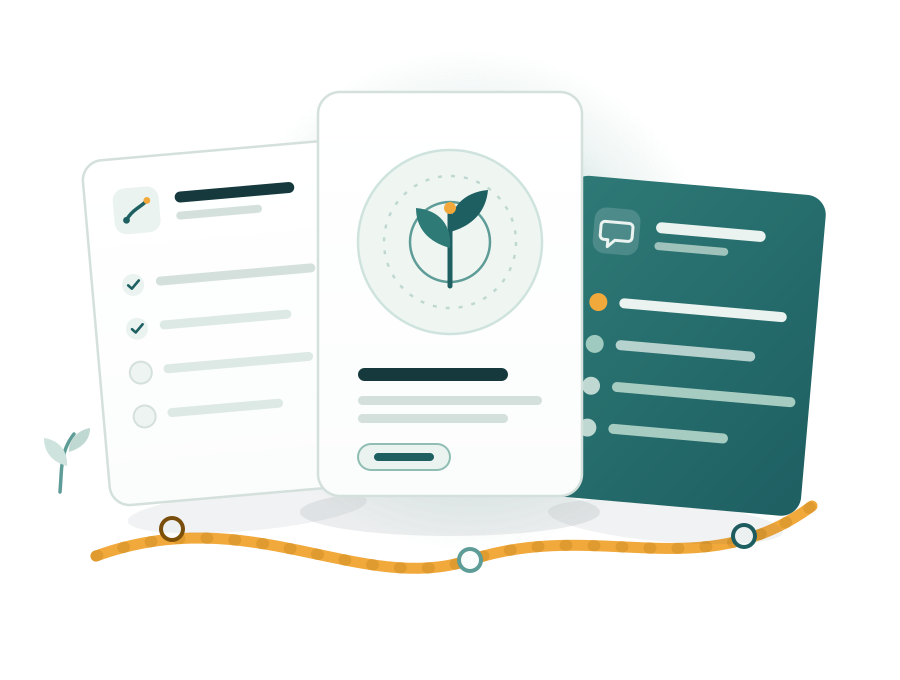

Ask any developmental question and get a calm answer drawn from a curated research library. Unlimited with any class.
Free · No account needed
Free tools for the first five years.
Interactive tools that meet your child where they are, and short guides for the moments that come up every day. Built from developmental research and written in plain language.
Having a hard moment right now? Open the one-tap guide Saved for you (0)
Interactive tools
Hands-on tools to use with your child or on your own. Each one gives you something specific back.
A counting check-in you run at home with a bowl, ten blocks, and a stuffed bear. It shows where your child is on the counting ladder, then matches games to that spot. The check-in is free.
What’s typical at each age across six developmental domains, drawn from ZERO TO THREE, Pathways.org, NAEYC, and the Child Development Institute. Saved in your browser and printable for checkups.
Developmental activities with the “why” attached: the mechanism each one feeds, ways to make it easier or harder, and a daily Today’s 3 rotation for your child.
Turn any children’s book into a back-and-forth language session with dialogic reading, an evidence-backed method. Printable as a cut-out deck.
A few careful questions about words, gestures, and understanding. You get a calm read on where communication sits, and printable notes if a pediatrician conversation is worth having.
Guides by topic
Short, plain-language references for everyday moments: what the research says, and what tends to help.
Behavior
What’s underneath the meltdown
A short reference that translates a tantrum from “bad behavior” into a nervous-system event, plus the kinds of responses the research supports.
Limits without escalation
Holding a “no” calmly when a child is testing autonomy, without scripts and without losing your own footing.
Repair after the hard moment
What the research says about repair, for the child and for the adult, when a moment goes sideways.
Sleep
What’s typical, by stage
A calm look at sleep development across the first year: what’s typical, what varies, and what the research can and can’t tell us.
Routines, transitions, and night-waking
Why toddler sleep changes, what routines help, and how to read night-waking without panic.
Screen time
Beyond “less is better”
Plain-language guidance grounded in current research: context, content, and the difference between background TV and shared viewing.
Screens, language, and attention
What the research suggests about how different kinds of screen use interact with language and attention in the early years.
Regulation
A nervous-system primer for parents
A short reference that explains co-regulation in plain language: what it actually is, and why it matters more than scripts.
Regulating yourself first
Tools for the adult side of the room: noticing your own activation, what helps, and why it isn’t selfish.
Common claims
Parenting claims, graded
Common parenting claims stated the way parents say them, then graded on evidence strength and scientific consensus, with sources on every page.
Saved for you
Private to this browser. Nothing here is sent anywhere.
Everything here stays free. The classes explain the why.
Five short modules on what is happening in the brain and nervous system between ages 1 and 3. $49 for lifetime access, with unlimited Growing Minds AI included.